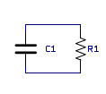
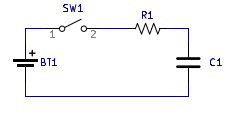

Let's consider an RC circuit. The most basic RC circuit is a capacitor in parallel with a resistor.
 The capacitor must
start with some charge/voltage across it, otherwise the circuit won't do anything. So what happens with this circuit when
time starts running? There is a voltage across the capacitor, so there is also a voltage across the resistor. This means
that there must be a current through the resistor and also through the capacitor. Sense there is a current through the
capacitor, there must also be a changing voltage across it. Sense the current is leaving the capacitor, the changing voltage
across it must be decreasing. But at what rate is this voltage decreasing? Well, we know the initial rate of decrease is
going to be proportional to Vi/R. However, as soon as current starts flowing the voltage across the circuit is going to
decrease, and in turn, the rate of decrease is going to decrease. So basically, the voltage across the circuit is going to
be a function that continuously decreases and its derivative continuously decreases. What does this sound like? An exponential.
The actual equation for this case is:
V(t) = Vie^(-t/τ)
Normally, this equation is solved using a differential equation that is found using ohms law and I = C(dv/dt). We kinda just
solved this differential equation intuitively, and I don't like solving differential equations, so I won't bother doing it
here.
All of the variables in the above equation should make sense except for tau (τ). Tau is the time constant. A time constant
is basically a parameter that is present in exponential responses in physical systems. You may have noticed that the equation
never actually reaches zero. The time constant allows us to quantify the response despite this. After one time constant, the
capacitor will be 63.2% discharged. After 2 time constants the capacitor will be 86.5% discharged, etc (You can calculate this
further using the equation). Also notice that 63.2% is approximately 2/3. After one time constant the capacitor is approximately
2/3 discharged. After two time constants the capacitor is approximately 2/3 discharged of 2/3 discharged, etc. Notice that
with this trend the response will never actually reach zero, but it will get very close. In an RC circuit the time constant is
calculated with the following formula.
τ = RC
After five time constants the capacitor will be 99.3% discharged. We pretty much consider it to be zero at this point.
We will now look at an RC circuit that is driven by a voltage source like so.

We will assume that the capacitor starts with no charge/voltage across it. Given this,
as soon as the switch closes all the voltage will land across the resistor. This will
give an initial current of Vs/R. There is now a current flowing into the capacitor which
means there is going to be a ramping voltage. And like the previos capacitor circuit,
the ramping capacitor voltage will lead to a lower current set by the resistor, which
will lead to a lower rate of ramping and so fourth. This yields another exponential equation:
V(t) = Vs(1-e^(-t/τ))
The time constant is also similar in this equation. Instead of the capacitor being 2/3 discharged
after one time constant it is 2/3 charged. Then 2/3 more charged, etc.